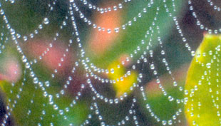

I am a Reiki Master Healer and have rediscovered a wonderful - and seemingly forgotten - method for treating cuts and scrapes: spiderwebs. Apply spiderwebs to cuts and scrapes for almost instant wound sealing. There seems to be no cross-contamination. I have used this remedy on myself for several years now with amazing results. This remedy got a trial by fire the first time I used it when I got an extremely deep cut from a can lid and the bleeding was profuse. I grabbed a few webs from outside the door and applied them directly to the wound, debris and all. Then I used a butterfly bandage to hold the wound edges together after the web was applied. Thus happened on a Friday evening, and by Monday the cut was sealed tight and no longer needed any bandage. There was very little soreness and no redness, irritation or swelling. The finger was completely usable by that Monday. The web seems to cause clotting immediately and it hardens to form a natural scab protection that readily peels off when wet. I have, unfortunately, had reason to use this remedy several times and each time I get the same results. The only side effect I have noticed is that the wound tends to itch due to the rapid healing.
Valerie
Griffin,GA
|
 |
|
|